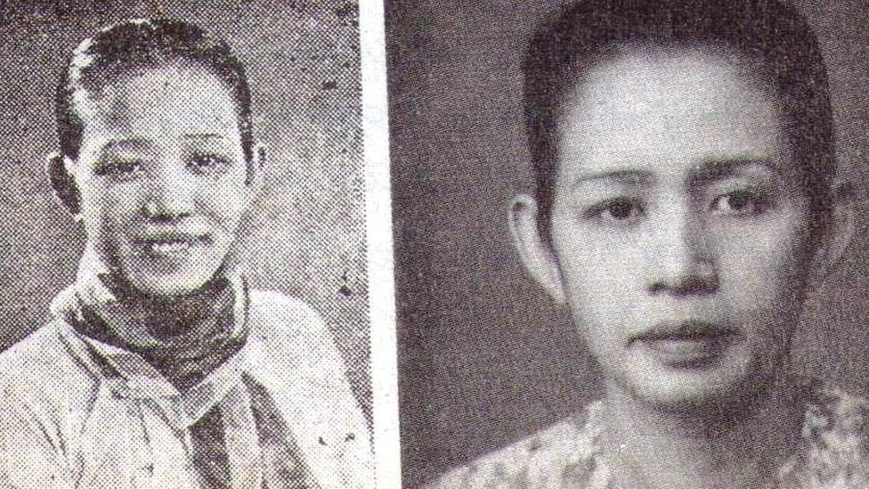

|
 |
|
| Name | Journal Kyaw Ma Ma Lay |
|---|---|
| Born | April 13,1917 |
| Nationality | Burmese |
| Hometown | Kamkalu Village, Bogale Township, Ayeyarwady Region |
| Education | Studied up to Grade 9 |
| Occupaion | Writer,Novelist,Journalist,Publisher |
| Year Active | 1936-1980 |
| Spouse | Journal Kyaw U Chit Mg |
| Children | Two sons and One daughter |
ဂျာနယ်ကျော် မမလေးသည် မြန်မာနိုင်ငံ၏ ထင်ရှားကျော်ကြားသော အမျိုးသမီးစာရေးဆရာနှင့် သတင်းစာဆရာမတစ်ဦး ဖြစ်သည်။ သူမကို ၁၉၁၇ ခုနှစ်၊ ဧပြီလ ၁၃ ရက်နေ့တွင် မြန်မာနိုင်ငံ၊ ဘိုကလေးမြို့၌ မွေးဖွားခဲ့သည်။ သူမသည် ငယ်စဉ်ကတည်းက စာပေကို စိတ်ဝင်စားခဲ့ပြီး နောက်ပိုင်းတွင် မြန်မာနိုင်ငံ၌ အလေးစားခံရဆုံး စာရေးဆရာမများထဲမှ တစ်ဦး ဖြစ်လာခဲ့သည်။
ဂျာနယ်ကျော် မမလေးသည် မြန်မာ့လူ့အဖွဲ့အစည်း၊ ယဉ်ကျေးမှုနှင့် လူ့ဆက်ဆံရေးများကို ထင်ဟပ်ဖော်ပြထားသော ဝတ္ထုများကြောင့် လူသိများခဲ့သည်။ သူမ၏ ထင်ရှားသော စာပေလက်ရာများတွင် မုန်း၍မဟူ (Not Out of Hate) နှင့် သူလိုလူ (Thu Lo Lu) တို့ ပါဝင်သည်။ သူမ၏ စာပေလက်ရာများတွင် လူမှုရေးပြဿနာများ၊ မိသားစုဘဝ၊ အချစ်ရေးနှင့် မြန်မာ့လူ့အဖွဲ့အစည်းအတွင်း အမျိုးသမီးများ ရင်ဆိုင်ကြုံတွေ့ရသော အခက်အခဲများကို ဖော်ထုတ်ရေးသားထားသည်။ သူမ၏ ဝတ္ထုများသည် လက်တွေ့ဘဝနှင့် နီးစပ်သော ဇာတ်ကောင်များနှင့် အဓိပ္ပာယ်ပြည့်ဝသော အသိပညာပေးသည့် သတင်းစကားများကြောင့် လေးစားနှစ်သက်ခြင်းခံရသည်။ သူမသည် မြန်မာစာပေဖွံ့ဖြိုးတိုးတက်ရေးအတွက် အရေးပါသော ပံ့ပိုးမှုများ ပြုလုပ်ခဲ့ပြီး မြန်မာနိုင်ငံ၏ ထင်ရှားကျော်ကြားသော အမျိုးသမီးစာရေးဆရာများထဲမှ တစ်ဦးအဖြစ် အမှတ်ရခံရသည်။ သူမ၏ စာပေလက်ရာများသည် ယနေ့တိုင် စာဖတ်သူများကို စိတ်ဓာတ်ခွန်အားနှင့် အသိအမြင်များ ပေးစွမ်းနေဆဲဖြစ်ပြီး မြန်မာ့စာပေအမွေအနှစ်၏ အရေးပါသော အစိတ်အပိုင်းတစ်ခုအဖြစ် တည်ရှိနေဆဲဖြစ်သည်။